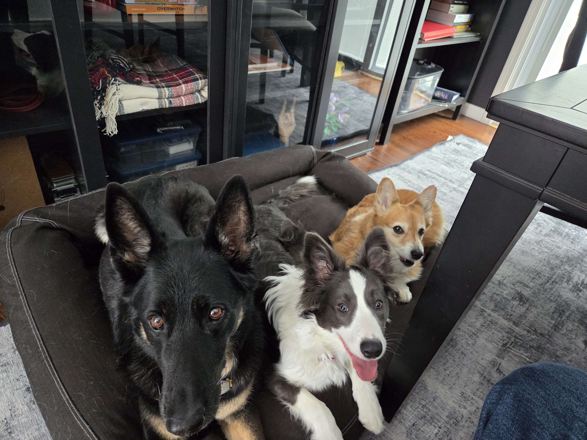
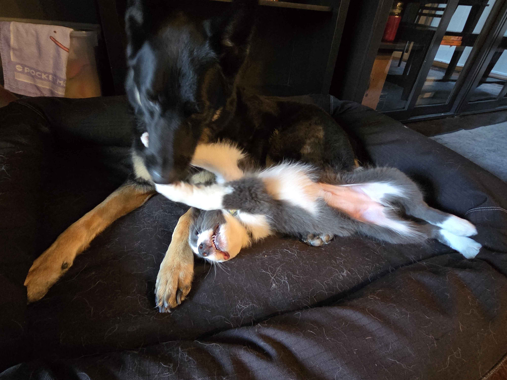
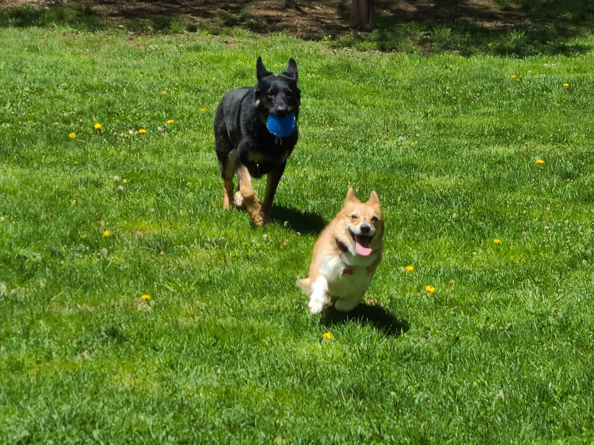
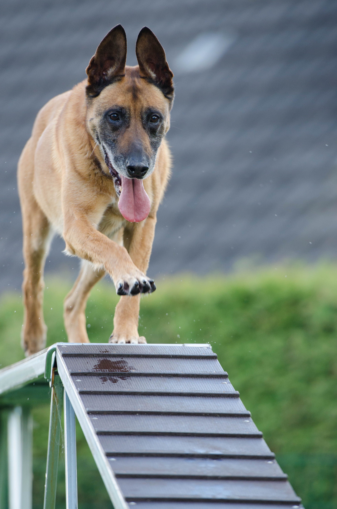
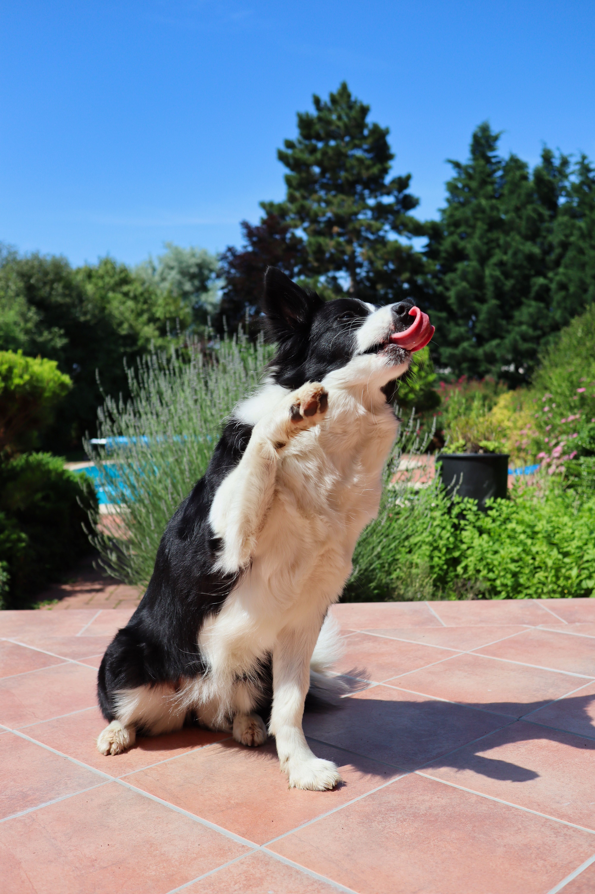

Group classes are the most widely used method of training handlers. Note the terminology: the education that takes place in the classroom is focused on showing you, the handler, how to communicate and interact with your dog in a way that helps both of you. Dog training is a continuous activity that takes place throughout your daily interactions with your pet. We offer a variety of courses that will teach you how you can train your dog to behave in various settings, perform fun tricks, or compete as a canine athlete.

Puppy classes teach the basics of socialization, household behavior, and beginner techniques such as the use of clicker training and marker words to establish a system of communication. Dogs are eligible until the age of 6 months and must have all appropriate vaccinations for their age to attend. Owners of older dogs looking for beginner lessons should consider obedience level 1.

We offer four levels of obedience:

Agility classes are offered as a way to explore whether your dog enjoys agility and try out the basics and equipment. Each class meet will focus on a different technique or obstacle in an ongoing rotation. Those looking to compete in sanctioned events may wish to reach out about private instruction so they can focus more effort on the specific skills their dog needs the most practice in and get 1-on-1 feedback.
